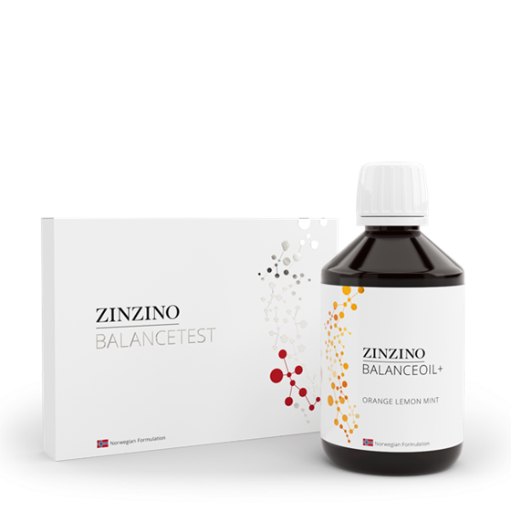
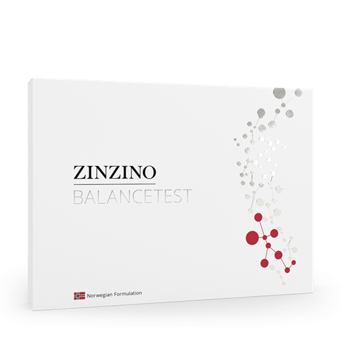
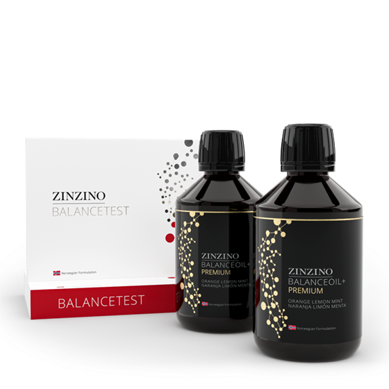
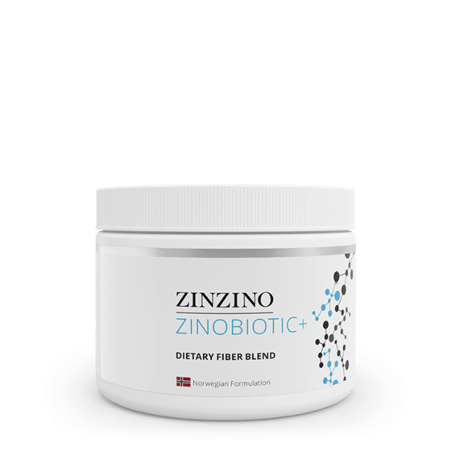
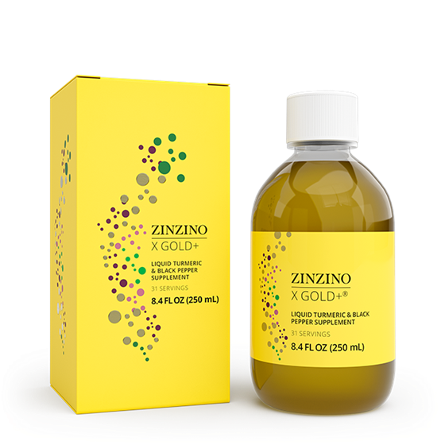
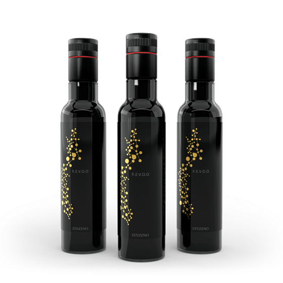

Information / 01
Get informed about your situation.
Understand what you're working with before deciding what to change.
- Testing
- Habits
- Nutrition
- Sleep
- Performance
- Questions
Information → Education → Action
You just need somewhere to start.
The Mindful Matrix helps you get informed about your situation, educate yourself on what it means, and take action toward better wellness.
The problem
People are surrounded by health advice, supplements, diets, studies, opinions, and trends. Knowing what to actually do with that information can be difficult.
The answer isn't more noise. It's knowing where to begin.
Information → Education → Action
You don't need every answer today. You need a process for finding your next one.
Information / 01
Understand what you're working with before deciding what to change.
Education / 02
Information without understanding can create more confusion. Learn what it means, explore credible sources, and understand your options.
Action / 03
Take what you've learned and decide what your next meaningful step looks like.

Complete pathway
A framework for taking a more informed, intentional role in your wellness.
Choose your path
I want to understand my situation.
Start here →I want to understand more.
Enter the Library →I'm ready to make changes.
Explore your options →Why I built this
Nobody is coming to save me but me.
I got tired of relying on other people to make me feel better.
So I decided to get informed about my situation. I started educating myself about what I found, asking better questions, and looking for credible information.
Then came the most important part: taking action.
The Mindful Matrix didn't come from having all the answers. It came from realizing that I didn't have to wait around for them.
I could learn. I could ask questions. I could make changes. I could take the next step.
Now you can too.
Explore the Library →Get informed
Testing is one possible way to become more informed. It is a starting point for asking better questions—not the entire Mindful Matrix philosophy.

Start here / Existing product data
The test plus BalanceOil+, with the monthly subscription. You test at home, post it to the lab, and choose from there.
The Library
Learn the why behind the choices you're making.
We're creating practical wellness guides grounded in credible sources—not more noise.
Coming to the Library
FoundationsOmega-3TestingGut HealthPerformanceResearchYou understand the why. Now explore the tools.
Visit the Shelf →Action
We don't believe in taking something just because someone on the internet said you should.
Start here
The test plus BalanceOil+, with the monthly subscription. You test at home, post it to the lab, and choose from there.
The one most people begin with.

Test
Dried blood spot, taken at home, posted to the lab
A direct path to the current home health tests collection.

Omega
Premium, AquaX, Vegan and Essent+ options
A direct path to the current omega kit collection.

Gut
Gut health products in the Zinzino shop
A direct path to the current gut health collection.

Turmeric
X Gold+ in the Zinzino shop
A direct path to the current product destination.

All
Gut, immune, skin and weight management
The broadest path to the current Zinzino shop.

Library
Academy, library and formulas — my partner page
The current destination for the BioLimitless partner resource.
Our standards
If we recommend something, we tell you why.
Whenever possible, education should link back to credible evidence.
What research suggests and what we personally think should not be presented as the same thing.
If we can financially benefit from something, visitors should know.
Uncertainty should not be hidden.
Trust isn't something we claim.It's something we earn.
Partnership disclosure
Gavin Reidel — Zinzino Independent Partner. Purchases are completed on Zinzino's own site at their listed retail price. BalanceTest is not available in New York.
That relationship doesn't change our standard: understand first, decide second.

Information → Education → Action
Start figuring out what's right.
Start your journey →Self-care is the real healthcare.